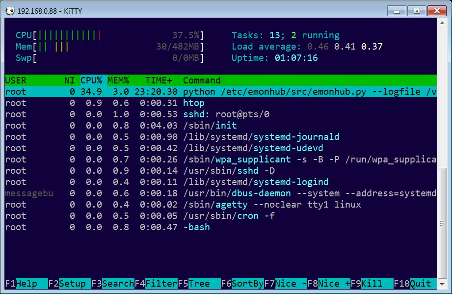
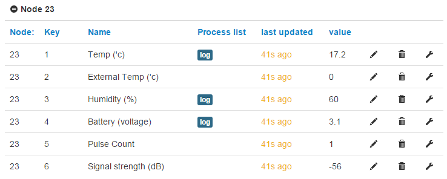

Hi all,
I recently received my EmonPi and loved what the OEM project has created. My only negative was the EmonPi image installation. Although its feature full and offers the best experience for EmonPi, for users who want to run EmonPi on a RPi zero, and/or use their existing RPi with multiple software installations, it wasn't ideal.
DietPi has created an alternative, minimal and lightweight installation for the EmonPi. This is currently aimed at users who want the ability to read electricity usage from the emoncms.org website. Those users could then simply purchase the EmonPi PCB which comes with the clipon power reader and use their existing RPi.
What is DietPi?

tldr: Lightweight, optimized and simplified linux for everyone. Featuring automated installations of popular software with automatic configuration and optimizations unique for your device.
Pros and Cons of the DietPi installation vs EmonPi:
- No RF transmission. RF receiver (sensor nodes) is supported (eg: EmonTX/EmonTH)
- No EmonPi LCD support.
- Not a replacement for the official EmonPi image, or supported by the OEM project.
- You will be required to setup your feeds, MyElectric app, and name your inputs on emoncms.org. This only needs to be completed once and you can follow the step by step guide here: http://fuzon.co.uk/phpbb/viewtopic.php?f=8&t=5&p=1529#p1525
+ Increased SD lifespan. As all data is sent directly to EmonCMS.org, and coupled with DietPi-Ramlog (http://fuzon.co.uk/phpbb/viewtopic.php?f=8&t=5&start=20#p68), no data is written to SD.
+ Extremely lightweight installation, freeing up your RPi device for multiple uses.
+/- To achieve this lightweight installation, your EmonPi data is sent to the emoncms.org website. You can view your stats from anywhere in the world.
How do I install EmonPi on DietPi?
- Download DietPi and follow the initial guide here: http://fuzon.co.uk/phpbb/viewtopic.php?f=8&t=9
- When DietPi-Software appears, select: DietPi Optimized Software from the menu, then select EmonPi from the list. Select "Go Start install" and follow the onscreen instructions.
What are the optimizations in DietPi vs Raspbian Jessie Lite?
https://docs.google.com/spreadsheets/d/1mDHGZC-H6tU6_O8kuLTG8d4A8Nt7lV1Q7MXTR_6qw30/edit?usp=sharing
How light is this alternative EmonPi installation in DietPi?
Raspberry Pi Zero. Clocked at 700mhz running the DietPi EmonPi installation: https://twitter.com/DietPi_/status/713073644142993408

More information for EmonPi installation:
http://fuzon.co.uk/phpbb/viewtopic.php?f=8&t=5&p=1529#p1525
I have a question/comment:
Please post it here, or email me directly daniel_haze@hotmail.com
Re: DietPi - Minimal/lightweight alternative EmonPi installation
All working fine now, had to use the EmonPi EmonHub variant git branch.
Inputs, feeds and visualization are working fine. Just cant seem to get the MyElectic App to save settings and display data.
Re: DietPi - Minimal/lightweight alternative EmonPi installation
Problem solved. We will offer a extremely lightweight EmonPi installation option that uses the emoncms.org cloud.
https://github.com/Fourdee/DietPi/issues/210#issuecomment-200873751
[Duplicate post deleted. Moderator (RW)]
Re: DietPi - Minimal/lightweight alternative EmonPi installation
Awesome! Nice work, yes the emon-pi varient of emonHub is the more developed version of emonHub and is recommended. Let me know if you have any further questions. Running Emoncms locally on the Pi does complicate things slightly. However. it's important to use to allow users the option of a stand-alone, fully open and non-cloud data logging option so users can fully 'own' their data. However, a lightweight option of just posting to emoncms.org seems like it's the best for your application.
I like the Pi-zero attached directly to the emonPi :-)
I notice in your Github discussion you mention using UART0 on the RasPi3 with the emonPi, that Wifi won't work. This is not true, only the BT needs to be disabled. The Wifi on the RasPi3 works great with the emonPi.
See: http://openenergymonitor.blogspot.com/2016/03/raspberry-pi-3.html
Re: DietPi - Minimal/lightweight alternative EmonPi installation
The optional installation option for EmonCMS is already coded into DietPi, but just disabled for the moment as I'am unable to fix the issues with MyElectric App. For some reason, it wont save the feeds after selecting them from the list.
This installation is only aimed at users who want;
- energy usage stats via emoncms.org
- EmonPi PCB (£59) barebones purchase
- Use an existing RPi.
- Lightweight installation (works great on Zero) which will also free up the device for other uses: https://twitter.com/DietPi_/status/713073644142993408
http://fuzon.co.uk/phpbb/viewtopic.php?f=8&t=5&start=50#p1525
I notice in your Github discussion you mention using UART0 on the RasPi3 with the emonPi, that Wifi won't work. This is not true, only the BT needs to be disabled. The Wifi on the RasPi3 works great with the emonPi.Seems your right. Nice one :)
On a side note, a question: Minus the logfile, does the EmonHub software do any writing to disk (eg: input data from EmonPi)? Or is it just EmonCMS that writes the buffer to SQL/Redis?
Edit:
However. it's important to use to allow users the option of a stand-alone, fully open and non-cloud data logging option so users can fully 'own' their data.Any plans to enable backup/restore of feeds, settings and historial data on emoncms.org?
Re: DietPi - Minimal/lightweight alternative EmonPi installation
Hi all,
Aiming to release DietPi v114 in the next few days, which will contain our alternative ultra lightweight installation for emonPi.
More details: http://fuzon.co.uk/phpbb/viewtopic.php?f=8&t=5&p=1525#p1525
Re: DietPi - Minimal/lightweight alternative EmonPi installation
v114 is released. I've updated the original post with all the information.
Re: DietPi - Minimal/lightweight alternative EmonPi installation
Yes, Emoncms writes to disk in the following folders configurable in settings.php. These folders need to be writable to allow feed data to save.
https://github.com/emoncms/emoncms/blob/master/default.emonpi.settings.p...
We have an Emocncms backup module, it is not currently enabled on emoncms.org, but we hope to add it in the near future. The backup module can be installed on local instances of Emoncms:
https://github.com/emoncms/backup
Fantastic, great to hear about V114 release. Good work. I saw your documentation of how to connect the emonPi to the zero. Most excellent.
Re: DietPi - Minimal/lightweight alternative EmonPi installation
Thanks for the info Glyn.
As DietPi uses Ramlog, and, no EmonPi data is written to disk on our installation, increased SD life could be another advantage on the DietPi installation.
I received my EmonTH. Turns out RF receiver is working on our installation already. Minus the input naming on emoncms.org, I didn't have to change a thing :)
I'd like to update our documentation. Would you be able to confirm the name assignments are correct for EmonTH inputs (picture below). I'd be grateful.

ps. what is input 5/6?
Re: DietPi - Minimal/lightweight alternative EmonPi installation
They seem correct. The last 2 are a pulse count and rssi (dB). Humidity is expressed as %.
Paul
Re: DietPi - Minimal/lightweight alternative EmonPi installation
Thanks Paul.
I'am curious to know if all the text descriptions, could be added automatically to the inputs on new accounts created on emoncms.org.
As we know what the input assignments are, and they appear to be static (not due to change), this could be an possible improvement to emoncms.org?
Now if I can just get my hands on one of those emonGLCD's I can test RF transmissions on the emonPi. I'am assuming this will work with the emonPi, although there is no reference on the store page (http://shop.openenergymonitor.com/emonglcd-lcd-display-unit-kit/) Any ideas when these will be back in stock, and, any plans to sell one thats pre-soldered?
Re: DietPi - Minimal/lightweight alternative EmonPi installation
You could write a script to automate the emoncms setup, although all the inputs and feeds on the server have their unique inputid or feedid. The input, the description field, aka "name" and the name field, aka "index" are not "static", and can be changed.
The "name" can be set via the input api using (if not logged in then add " &apikey=writeapikey " to the url)
https://emoncms.org/input/set.json?inputid=inputid&fields={"description":"name"}
replacing the details in bold italics as you go. This can only be done once the inputid is known and cannot be done from the name, or node id and index, so you will need to parse the inputids from an input list obtained by
https://emoncms.org/input/list.json
Once you have your inputids, you can name them as shown above, and even automate the creation of feeds and processlists, When using the feed api to create feeds, it will return the feedid each time so you can reuse them to create your processlists, You'll need pre-defined processlists, just substitute the inputids and feedids.
The emonGLCDs are good tools for "seeing" the rf transmissions. I know some users have a preference for them. I however, prefer to use a JeeLink. It's basically like a souped up RFM2Pi in the form of a USB stick, that can be used on a PC or another (or even the same) PI, so data can be gathered over time, or viewed in a spreadsheet, posted to emoncms etc etc. It's an invaluable tool.
Paul
Re: DietPi - Minimal/lightweight alternative EmonPi installation
Hi Paul,
Apologies for the delay and thanks for the information regarding API. I will give this a try when I can.
I'am hoping this will allow me to fully automate the users emoncms.org setup.
The JeeLink looks great, will add one of those to my "wish list" :)
Kind Regards,
Dan